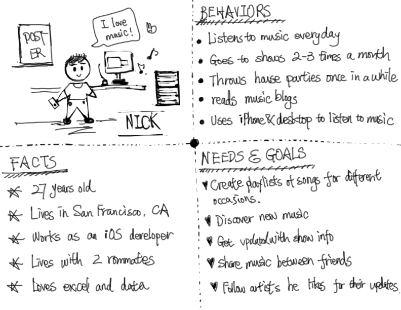

Spotify is a popular commercial music streaming service, it is already a very good product. But just like any great product, there is still room for improvement; the objective of this usability study was to identify what pain points exist for users and make recommendations on ways to address these problems to increase engagement.
Identify the pain points of finding, organizing and sharing music within Spotify web application.
Below is the landing page of Spotify Web App as of May 25th, 2014
What: Spotify web app.
Who: Eight existing Spotify users who listen to music everyday (not necessarily using Spotify).
Where: San Francisco
I created a persona before I conducted my user tests. I used the persona to select my participants. Meet my persona, Nick!
I determined the tasks based on the essential needs of using online music streaming tools. I phrased the tasks as open-ended scenarios to avoid leading the participants to complete the task in a predetermined way.
The eight usability tests were recorded using QuickTime. I reviewed the recordings, took notes, identified and prioritized usability issues.
As you can see, there are a lot of issues going on here and I am not going to address them all in one single post. Instead, let’s take a look at some of the focused changes that may make using Spotify a more enjoyable experience.
Users expect to be able to customize their search results.
“The reason I don’t use Spotify is that it is so hard for me to find anything.” — User
The picture below demonstrates that the user wanted to find a song that contained “tourist” in the title. The user typed “tourist” into the search bar, but the results were impossible to sort or filter. The user could not find the intended song.
Allow users to sort/filter song lists by artist or album or even date of release.
Users expect the “+” to mean “add to,” instead of “save,” “follow,” or “blank.”
“By clicking on it, I thought it would add the song to my playlist. Where does it save to?” — User
“Gosh, this is confusing!” — User
“Why is there such a function?” — User
Every participant clicked the “+” sign to add their first song to their playlist. Half of the participants still accidentally clicked on it even after they realized that it was wrong. This icon also appears to be “follow” and “null” on different pages, as shown below. The inconsistency confused the participants.
Give the “+” icon an “add to” function, which enables users to choose which playlist they want to “save” the song to.
The “Follow” button is a mystery to users.
The “Follow” button confused all the participants. Each one thought the artists they followed should be listed under the “Follow” button on the left panel, but they are not.
“Where are my followed artists?” — User
“What does ‘following’ mean?” — User
“I’d still just use Search to find the artist instead of using this ‘following’ thing.” — User
The participants expected the “Follow” page to show them a list of the artists they are already following. Instead, the page has only the three options illustrated below:
Add the “followed artists” section into the “Follow” page. Show news feed, tour dates, and merchandise information as a clear option. A design recommendation is shown below.
The goal of user research is to understand the target user’s needs and motivations so that we can develop products that they truly love. I’ll be using these needs and motivations to drive the development of the product at each subsequent step of my design process.